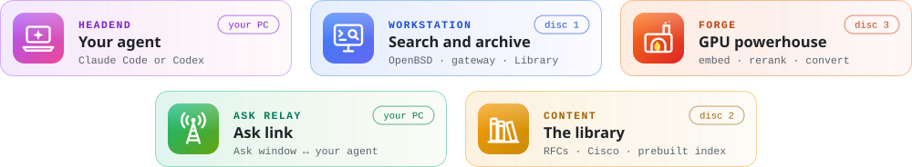
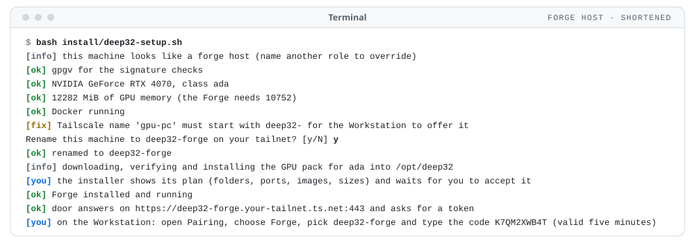
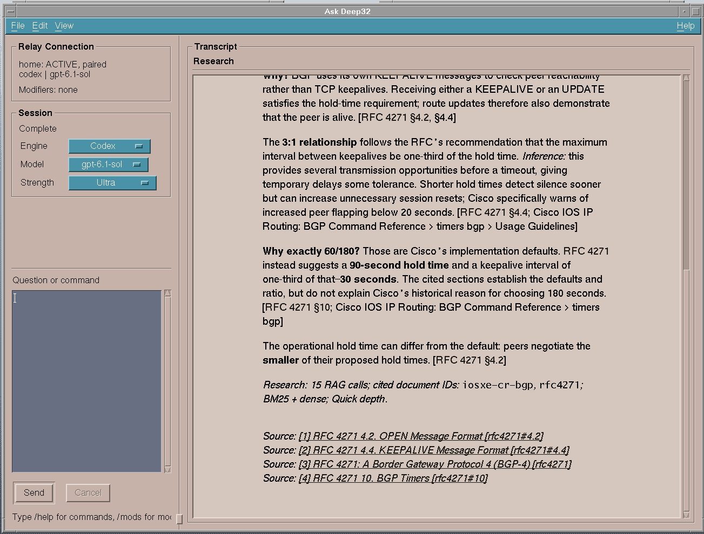

Installation · general setup
General setup
This page sets up Deep32 the common way. One PC with an NVIDIA card runs the Forge and your agent, the Workstation runs as a VM on the same PC, and all of it joins one tailnet. The setup wizard drives each part and checks each step. Where your setup is different, the step says what changes.
Applies to 0.1.0-alpha.3Plan on an afternoon, most of it downloadingEvery step by hand: INSTALL.md

What I have tested
The Workstation installs from its image on a clean VM: the guided install, first boot, Tailscale and publishing the gateway. My lab VM runs on Proxmox. The Forge installs from the signed images on Linux, in WSL 2 and on Docker Desktop; I checked each of its parts on an RTX 2080 Ti, and the full run on each kind of host follows the release. The wizard's VM guide is boot-tested on Proxmox VE only. I haven't yet run the setup from start to finish on a clean machine, so if a step fails here, the same step by hand in INSTALL.md is the tested path.
Step 1: Before you start
Where: your PC and a browserA checklist
What you need
Do this
- In the Tailscale admin console, open the DNS page (
login.tailscale.com/admin/dns) and turn on MagicDNS and HTTPS Certificates. Deep32 publishes its services with Tailscale Serve over HTTPS, which needs both. The installers check them and name the one that's off; they never change tailnet settings themselves. - With HTTPS certificates on, machine names appear in the public Certificate Transparency logs. Give your machines names that say nothing about you.
- Sign the PC in to Tailscale and give it a machine name that starts with
deep32-, for exampledeep32-forge. The Workstation only offers machines named that way for pairing. Rename it on the admin console's Machines page, or on Linux:sudo tailscale set --hostname deep32-forge - Optional: Tailscale expires a device's sign-in after 180 days by default. To avoid signing in again, choose Disable key expiry for your Deep32 machines on the Machines page.
What you should see
The DNS page shows MagicDNS and HTTPS Certificates on, and tailscale status on the PC lists it
under its deep32- name.
If it doesn't
- Not sure about the card? These print its compute capability and its memory in MiB. The Forge needs 10752.
nvidia-smi --query-gpu=compute_cap --format=csv,noheader nvidia-smi --query-gpu=memory.total --format=csv,noheader,nounits - The wizard checks this list again in step 3 and says what's missing, so an open box isn't a reason to stop here.
Step 2: Get Deep32
Where: the PC, in a terminal
What you need
Git, and GnuPG to check the release tag's signature.
Do this
- Clone the repository at the release tag and check the tag's signature.
Linux
git clone --branch v0.1.0-alpha.3 https://github.com/hellobpdu/deep32.git cd deep32 gpg --import install/release-key.asc git verify-tag v0.1.0-alpha.3Windows
Clone in PowerShell:
git clone --branch v0.1.0-alpha.3 https://github.com/hellobpdu/deep32.git; cd deep32Then check the signature from the same folder in Git Bash, which comes with Git for Windows and includes GnuPG:
gpg --import install/release-key.asc git verify-tag v0.1.0-alpha.3 - The signing key's fingerprint must be
B205 B406 5486 27AA BF52 50D8 A078 C5F2 5D02 5DD6, as printed in the README. - Use the scripts from this verified clone for every step that follows.
Let your agent do the next steps
If Claude Code or Codex runs on this PC, open it in the clone and run /deep32-install in Claude
Code or $deep32-install in Codex. It follows
AGENTS.md and asks before it changes
anything. Passwords, sign-in clicks and pairing codes stay yours.
What you should see
git verify-tag reports a good signature made by the key with the fingerprint above.
If it doesn't
- No public key: run the
gpg --importline first, from inside the clone. - A bad signature: don't use that clone. Delete it and clone again. If the check still fails, report it as SECURITY.md describes.
Step 3: Run the wizard
Where: the PC, in the cloneDownloads 21.5 GB
What you need
- The verified clone from step 2.
- bash 4.2 or newer on Linux; Windows PowerShell 5.1 or PowerShell 7 on Windows.
- A terminal window of at least 80 columns by 24 rows.
- On Windows, PowerShell started as administrator, with Docker Desktop running: the Forge install in step 7 loads Docker images and adds a startup task.
Do this
- Optional: watch the whole wizard first against a recorded setup. It uses no network and changes nothing.
Linux
bash install/deep32-wizard.sh --demoWindows
powershell -NoProfile -ExecutionPolicy Bypass -File install\deep32-wizard.ps1 -Demo - Start the wizard:
Linux
bash install/deep32-wizard.shWindows
powershell -NoProfile -ExecutionPolicy Bypass -File install\deep32-wizard.ps1 - Check this machine. The wizard checks the PC and lists anything that's missing. It offers to fix what it safely can, such as starting the Tailscale sign-in, and asks before it does.
- Your machines. Set the Workstation, the Forge and the Agent PC to Set it up on this machine, then choose Continue.
- Choose role. The wizard starts with the Workstation host. It downloads and verifies disc 1 and disc 2, writes the VM files, and then opens the VM guide (step 4).
Keys: arrows choose, Enter continues, Esc goes back, L shows the log, ? shows help, Q quits.
What you should see
- A rail on the left with the stages Check this machine, Choose role, Download and verify, Install, Pair and Done.
- The download progress of each image.
deep32-getkeeps an image only if every check against the release's signed metadata passes. - For the Workstation host, the Install stage ends with Disc 1 checked again and VM files and commands written.
The wizard keeps a log of every run in ~/.local/state/deep32-setup on Linux and
%LOCALAPPDATA%\Deep32-setup on Windows.
If it doesn't
- Make the window bigger: the window is smaller than 80 by 24. Resize it, or press P to go on in plain text.
- A step fails: the wizard shows an error code, what happened and the fix, with Try again, Back and Show the log. Troubleshooting by error code explains where the codes come from.
- A download stopped: run the wizard again.
deep32-getresumes from the last verified 64 MiB chunk. If every mirror fails, it prints the image's torrent address; the advanced guide shows how to check a file you fetched that way. - When the input or output isn't a terminal,
TERMisdumborNO_COLORis set, the wizard prints the setup script's tagged lines in place of its screens.--plain(-Plain) does the same on purpose.
Step 4: The Workstation VM
Where: the PC and its hypervisorThe guided install takes about 15 minutes
What you need
- The VM files from step 3: deep32-get's recipe for Hyper-V or KVM, next to the verified disc 1 in the download folder.
- Hyper-V on Windows, or KVM with libvirt on Linux.
- These settings for the VM. The guide gives every value for your hypervisor.
| Setting | Value |
|---|---|
| Firmware | BIOS (legacy). On Hyper-V, a Generation 1 VM: OpenBSD doesn't support Generation 2 |
| Processors, memory | 6 vCPUs and 12 GB; at least 4 vCPUs and 8 GB |
| First disk | Disc 1, the installer. It is a disk image: attach it as the VM's first disk and boot from it |
| Second disk | Empty, 200 GB or more. The guided layout sizes the Library partition from it |
| Network | One adapter, bridged or NAT, with DHCP and internet access. On KVM, e1000 |
| Display | Standard VGA. The desktop hasn't been tested on virtio-gpu |
| Disc 2 | Later (step 6): a virtual CD, a USB stick or the network |
Do this
- When the Workstation host role is done, the wizard opens the VM guide. Pick your hypervisor; the one found on this PC is preselected. Proxmox VE is marked boot-tested; the others say not boot-tested yet.
- Where does the VM run? Choose On this PC.
- How the Workstation VM connects. Bridged is recommended: the Workstation gets an address on your LAN, and Tailscale usually connects directly between machines on the same LAN. NAT also works. Host-only, internal and private networks don't, because the Workstation's Tailscale sign-in needs the internet.
- Work through the guide's steps. Each one says what to do and where, with every value filled in. Press Enter and the wizard checks it: OK, an ERROR with its code and fix, or YOU CONFIRMED for a step it can't see. Its Create the VM step uses deep32-get's commands, which make the target disk 200 GB.
- Install the Workstation. Start the VM and open its console. The guided installer asks for the keyboard layout, the machine name, whether to allow root maintenance over SSH with your own key (off unless you choose it), your user name, the disk to install on, whether to encrypt it, and your time zone. Enter accepts a default. For the machine name, type the Workstation name you gave the wizard. Install to the empty 200 GB disk, never to the installer disk; you confirm it by typing its name, because the whole disk is erased.
- The install takes about 15 minutes and halts with
The operating system has halted. Please press any key to reboot.Don't press a key: with disc 1 still first in the boot order, that starts the installer again. Turn the VM off instead. - Boot the installed disk; attach disc 2. Detach the installer disk. If disc 2 goes in as a virtual CD, attach it now; a USB stick or the network comes in step 6. Then go on to step 5.
The commands the guide gives for Hyper-V and KVM
The guide fills in your names. Deep32Workstation is the VM name in deep32-get's recipe;
SWITCH is your External switch (bridged) or an Internal switch with NAT, which
Get-VMSwitch lists; DISC2 is the path of disc 2 in your download folder.
Windows (Hyper-V)
Create the VM, in PowerShell as administrator, in the VM folder:
$root = (Get-Location).Path
New-VHD -Path (Join-Path $root 'target.vhdx') -Dynamic -SizeBytes 200GB
New-VM -Name Deep32Workstation -Generation 1 -MemoryStartupBytes 12GB -NoVHD -SwitchName 'SWITCH'
Set-VMProcessor -VMName Deep32Workstation -Count 6
Add-VMHardDiskDrive -VMName Deep32Workstation -ControllerType IDE -ControllerNumber 0 -ControllerLocation 0 -Path (Join-Path $root 'installer.vhd')
Add-VMHardDiskDrive -VMName Deep32Workstation -ControllerType IDE -ControllerNumber 0 -ControllerLocation 1 -Path (Join-Path $root 'target.vhdx')After the install, detach the installer and attach disc 2:
Remove-VMHardDiskDrive -VMName Deep32Workstation -ControllerType IDE -ControllerNumber 0 -ControllerLocation 0
Add-VMDvdDrive -VMName Deep32Workstation -Path 'DISC2'Linux (KVM)
Create the VM, in a shell as root, in the VM folder. Read workstation.xml before you define it:
qemu-img create -f qcow2 target.qcow2 200G
virt-install --name Deep32Workstation --memory 12288 --vcpus 6 --os-variant generic --import --boot hd --disk path=installer.img,format=raw,bus=ide --disk path=target.qcow2,format=qcow2,bus=ide --network network=default,model=e1000 --graphics vnc,listen=127.0.0.1 --video vga --noautoconsole --print-xml > workstation.xml
virsh define workstation.xml
virsh start Deep32WorkstationAfter the install, detach the installer and attach disc 2:
virsh detach-disk Deep32Workstation hda --config
virsh attach-disk Deep32Workstation "DISC2" hdc --type cdrom --mode readonly --configWhat you should see
- The check after Create the VM reads the VM's settings with
Get-VMorvirshand shows OK for each one. - At the end of the install, the installer prints
Remove the install medium before starting the installed system.and halts.
If it doesn't
VM_FIRMWARE_UEFIorVM_GENERATION: the VM boots with UEFI. A Hyper-V Generation 2 VM boots with UEFI only, so remove it and create it again with-Generation 1.VM_DISK_SMALL: the VM's largest disk is under 200 GB. Give it an empty disk of at least 200 GB.VM_DISPLAY_VIRTIO: set the VM's display to standard VGA.NET_HOSTONLY: the VM is on a host-only, internal or private network. Connect it to a bridged or a NAT network.KIT_MISSING: the guide found no verified disc 1 with deep32-get's VM folder. The error shows thedeep32-getline that makes it; then start the guide again with--vm-guide(-VmGuide), adding--kit DIR(-Kit FOLDER) for another download folder.- The VM started the installer again after the halt: turn it off, then detach disc 1 or move the target disk ahead of it in the boot order.
Step 5: First boot and Tailscale sign-in
Where: the VM's console, then any device with a browser
What you need
The VM set to boot from its installed disk, your Tailscale account, and any device with a browser.
Do this
- Start the VM. On its console, set the passwords for your user and for root.
- The Workstation makes its own tokens and keys, then starts Tailscale once its network is up. It shows the
sign-in address in three places:
- on the text console (Ctrl+Alt+F1), in a status line with
signin=https://login.tailscale.com/a/…; - on the VM's serial port, if it has one, every 10 seconds;
- in the First Start window under Sign-in address. First Start opens by itself when you log in to the desktop.
- on the text console (Ctrl+Alt+F1), in a status line with
- Open the address on any device and sign in with your account.
- In the wizard, the First boot and Tailscale step waits for the Workstation to join your tailnet.
- Optional: on the admin console's Machines page, choose Disable key expiry for the Workstation.
What you should see
- The wizard shows OK when a new machine with the Workstation's name comes online in your tailnet, and the admin console lists it as connected.
- Until disc 2 is imported, the boot messages list
kiwix_serve(failed). That is expected: the encyclopedia server has no library to serve before the import, and the import starts it.
If it doesn't
- The address expired before you used it: Tailscale makes a new one, and First Start shows it. As root,
tailscale statusprints it too. TS_NOT_HERE: this PC isn't signed in to your tailnet, so the wizard can't see the Workstation join. Confirm it in the admin console, or sign this PC in and check the step again.TS_PEER_MISSING: no machine with the Workstation's name is online yet. Finish the sign-in with the address on the Workstation's console.- The sign-in stalls: the Workstation checks DNSSEC through the DNS server that DHCP gives it, and a few routers' DNS breaks that. Give the VM's network another DNS server.
Step 6: Disc 2, the content
Where: the WorkstationSearch ready in about 8 minutes, the Library in about 2 hours on my lab VM
What you need
- The Workstation signed in to your tailnet (step 5).
- Disc 2 (19.6 GB), which the wizard downloaded and verified in step 3.
- The 200 GB Workstation disk: the import needs about 20 GB free on the Library partition.
Do this
Give the Workstation disc 2 in one of three ways and leave it there. Once the Workstation is signed in, it finds disc 2 and imports it by itself. If you attached disc 2 in the VM guide, the import is already running.
A CD drive or a virtual CD
In a VM, attach disc 2 as a read-only CD/DVD drive. The VM guide's Boot the installed disk; attach disc 2 step has the command for your hypervisor. On a real machine, burn disc 2 to a 25 GB Blu-ray disc (BD-R) for an optical drive.
A USB stick
Write the disc 2 image to a stick of 32 GB or more with balenaEtcher or dd. This erases the
stick. Plug it in.
Over the network
On the Workstation, choose Get Disc 2 over the Network in First Start, or run this on the console:
doas /usr/local/d32/sbin/d32-content-fetchThen pick a source:
- A PC on your tailnet that has disc 2, normally the one that ran the wizard. On that PC, choose
Send disc 2 in the wizard. It shows the PC's tailnet name and a ten-character
code. On the Workstation, pick that PC and type the code. Keep the wizard open until the download is done:
Enter stops sending, and so does closing the wizard. On Linux, sending needs root, or your user
set as the Tailscale operator with
sudo tailscale set --operator=$USER. - The Internet Archive mirror, chosen on the Workstation. No PC is needed.
The Workstation downloads the image into its empty update slot, carries on after an interruption, shows the progress, and deletes the image when the import is done.
What you should see
- The import checks disc 2's signature and the free space, then reads the disc once, in two parts, checking each file's size and SHA-256 against the signed manifest. First Start and the console follow it, and the desktop's Import Report shows each step.
- What search needs comes first. When it's in, the console says
the knowledge base is ready; the Library is still importing. From then on search, Ask, publication and pairing work, so go on with step 7. On my lab VM (KVM on Proxmox, disc 2 on a virtual CD drive) that was about 8 minutes after sign-in. Over the network, the download comes first. - The Library follows in the background and switches on once it has checked out. The whole import took about
2 hours there. When it's done,
tail /var/log/d32-import.logends with afinish outcome=importedline.
If it doesn't
- Don't start the import by hand. Only if Import Report shows that the import stopped, press Try Again there, or run it as root on the console, naming the CD drive
(
dmesg | grep ^cdshows it):/usr/local/d32/libexec/d32-content-import --device cd0/usr/local/d32/libexec/d32-content-import --reportshows the import's progress on the console. IMPORT_SPACE: the Library partition is too small, as on a disk under 200 GB. The knowledge base still goes into use; the Library stops before any of it is copied.IMPORT_KB_ONLY: the Library part failed. The knowledge base stays in use, and Import Report says so.- A network download stopped: choose Get Disc 2 over the Network again. It carries on where it stopped.
Step 7: The Forge
Where: the PCDownloads about 37.1 GBOn Windows, PowerShell as administrator
What you need
- The host. Ubuntu 24.04 on amd64 with Docker Engine, on the host itself or as a WSL 2 distro; or Windows 11 build 26100 or later (Home, Pro, Enterprise or Education) with Docker Desktop 4.99.0 or later and Docker Engine 29.0.0 or later on the WSL 2 backend. The installer stops on any other system.
- The card. Compute capability 7.5 or newer with at least 10.5 GB of graphics memory, and driver 580.65.06 or newer. On Windows the host driver serves Docker Desktop; don't install a Linux graphics driver inside its WSL 2 backend. On Linux, the NVIDIA Container Toolkit.
- Docker's image store. On Linux, Docker Engine can keep its default containerd store, with the
system's containerd running, or use the classic store (
overlay2). Docker Desktop on Windows still needs the classic store. Images and containers you keep in the other store stay hidden until you switch back, so the installer never changes this for you. To switch:Linux
Nothing to switch. If you prefer the classic store, add this key to
/etc/docker/daemon.json, then restart Docker:"features": {"containerd-snapshotter": false}sudo systemctl restart dockerWindows
In Docker Desktop, open Settings, General, turn off Use containerd for pulling and storing images, and choose Apply & restart.
- Python. 3.12 or newer for the installer, and the pairing helper runs on that same Python.
- Free space. About 244 to 247 GB when you start, with the ingestion image, if the data folder and Docker's storage share one filesystem or volume; less without it (other layouts).
- Tailscale. A machine name that starts with
deep32-, in the same tailnet as the Workstation (step 1).
Do this
- On the wizard's Done screen, choose Set up the Forge here. Or start the wizard again and choose Forge.
- The checks run for the Forge: Python, the card and its class, the driver and its memory, Docker, Compose, the image store, containerd, the Container Toolkit, and Tailscale.
- The wizard downloads and verifies your card's images from disc 3: the 18.6 GB shared core and your card's 3.1 to 3.3 GB embedder, and the 15.3 GB ingestion image on Windows or when you ask for it.
- The installer checks the host before it changes anything. It asks you to confirm the tailnet the Forge will publish on, and to agree that the Forge's name goes into the public Certificate Transparency logs. Then it shows its plan: the folders, the ports, and the size and SHA-256 of each image.
- To agree to the plan, type the 64-character digest shown under it (spaces are fine, and pasting works), then choose Install.
What you should see
The install goes through Plan accepted, This host checked again, Images mounted read-only, Forge loader running, Settings handed over and Forge started; its doors answer with a token request. Just before the host check's result, the installer prints a line like this one for Ubuntu 24.04. It doesn't stop the install:
Note: this host type is accepted for 0.1.0-alpha.3 under an owner waiver dated 2026-11-18 (recipe ubuntu-24.04-docker-engine-j2). I have not yet run a full install on it; FORGE-PREREQUISITES.json lists what was not run.On Windows the recipe is windows-11-docker-desktop-wsl2-j1. The run ends with:
[ok] Forge installed and running
[ok] door answers on https://deep32-forge.YOUR-TAILNET.ts.net:443 and asks for a token
[ok] door answers on https://deep32-forge.YOUR-TAILNET.ts.net:8443 and asks for a token
To check the door yourself: it answers 401, which means it is up and wants a token.
Linux
curl -s -o /dev/null -w '%{http_code}\n' https://deep32-forge.YOUR-TAILNET.ts.net/healthWindows
curl.exe -s -o NUL -w "%{http_code}`n" https://deep32-forge.YOUR-TAILNET.ts.net/healthIf it doesn't
docker-store-containerd: Docker Desktop still uses its containerd store. Switch it as shown above, then run the wizard again.gpu.memory: the card has less memory than the signed plan needs.host.magicdnsorhost.https-certificates: turn MagicDNS or HTTPS Certificates on in the admin console's DNS page, then run the wizard again.tailscale-approval: the PC waits for approval in your tailnet. Approve it on the admin console's Machines page.- Not enough free space: the installer compares free space with the storage budget signed into the release, before it joins the images and again after. The disk table has the figures for each layout.
- The door answered something other than
401: it may still be starting. Wait a minute and run the wizard again. On the host,tailscale serve statusshould list the HTTPS routes for ports 443 and 8443.
Step 8: Pair the Forge
Where: the Workstation and the PCA code lasts five minutes
What you need
- The Workstation's knowledge base in use: Import Report shows it. The Library can still be importing.
- The Forge's pairing window open. Until it is paired, each start of the Forge opens a five-minute window with a ten-character code, and the wizard's Pair screen shows it.
Do this
- On the Workstation, open Pairing and choose Forge.
From a terminal on the Workstation:
doas /usr/local/d32/sbin/d32-pairdesk -forge - Pick your Forge, for example
deep32-forge. - Type the code from the wizard's Pair screen. Spaces and the dot between the two groups are fine.
- Wait until the Workstation says the pairing is saved, then choose Paired in the wizard.
Reading the code without the wizard
Linux
The code is in a file only root can read:
sudo grep -o 'pair=[A-Z2-7]*' /opt/deep32/status/statusWindows
A small helper opens the pairing window, from an elevated PowerShell in the clone. It keeps the current
code in C:\Deep32\status\windows-pair, readable only by you and SYSTEM:
python -I -B src\release-tools\forge_pair_windows.py --data-root C:\Deep32What you should see
Pairing turns meaning search on by itself, and Pairing lists the Forge as paired.
Within a minute the Workstation has checked both of the Forge's models. As root,
/usr/local/d32/sbin/d32-gpu-ext status then shows "verified": true for
embed and rerank.
If it doesn't
- The code expired: choose New code (runs the setup again) in the wizard. If the window closes before you pair, the Forge's services keep running but it records itself as stopped until you start it again.
- After three failed attempts within 30 minutes, pairing locks for 15 minutes.
- Your Forge isn't in the list: the Workstation only offers machines whose Tailscale name starts with
deep32-and that are in its own tailnet. Checktailscale statuson both. - The models don't show as verified: the wizard's list of next steps turns them on and checks them, from a
terminal on the Workstation:
doas /usr/local/d32/sbin/d32-gpu-ext on doas /usr/local/d32/sbin/d32-gpu-ext status
Step 9: Publish the gateway and connect your agent
Where: the Workstation's text console, then the PCA code lasts five minutes
What you need
- The Workstation's knowledge base in use.
- Claude Code or Codex installed and signed in on the PC, Python 3.11 or newer for Connect, and OpenSSL on
PATH. - Tailscale on the PC, signed in to the same tailnet as the Workstation.
Do this
- Publish the Workstation's gateway, once, as root on its text console
(Ctrl+Alt+F1):
With
/usr/local/d32/sbin/d32-publish publish --accept-ct--accept-ctyou agree that the Workstation's HTTPS name,<workstation>.<tailnet>.ts.net, is recorded in the public Certificate Transparency logs, as every Tailscale HTTPS name is. Without it, publication stays off. The command checks the gateway and ends with the Connect command for this Workstation, for Linux and for Windows. - On the PC, choose Set up the Agent PC here on the wizard's
Done screen, or start the wizard again and choose Agent PC. Give it the Workstation's
address and your agent, then choose Start Connect. By hand, from the clone, with
claudefor Claude Code orcodexfor Codex:Connect checks the published gateway, then waits atLinux
bash adapters/connect.sh --agent claude --workstation 'https://<workstation>.<tailnet>.ts.net/mcp'Windows
powershell -NoProfile -ExecutionPolicy Bypass -File adapters\connect.ps1 -Agent claude -Workstation 'https://<workstation>.<tailnet>.ts.net/mcp'Workstation one-time code for claude (hidden, 10 characters):. - On the Workstation, open Pairing and choose Headend,
or run
/usr/local/d32/sbin/d32-pairdesk -headendas root on the console. It shows a ten-character code that lasts five minutes. Type it at Connect's prompt, which shows a dot for each character. On the console, press Enter afterwards to close the pairing screen. - If the agent already has a configuration on the PC, Connect lists the files it will back up and merge, and
asks
Type merge to approve this file plan:. Typemergeto go on. If you decline, Connect stops without changing those files. - Start the agent with the
Launch:command Connect prints. When it asks, approve only the eleven Deep32 tools, then run the skill's check:/deep32 first-session checkin Claude Code or$deep32 first-session checkin Codex.
What you should see
Run the Connect command again with --check (-Check in PowerShell). It changes nothing
and ends with:
claude: read-only authentication and eleven-tool checks passed; client version …Connect also installs the research skills: deep32 for Claude Code, and for Codex
deep32, deep32-configure, deep32-describe, deep32-design,
deep32-troubleshoot and deep32-verify. From now on the same agent answers from your
Workstation through them. Connect installs them under a scoped name, such as deep32_1a2b3c4d;
Agent Adapters section
6 has the details. In the first session, rag_status reports keyword search, embeddings and
reranking as healthy.
If it doesn't
401from the gateway: start the agent with the printed launcher. If it still fails, revoke the headend on the Workstation and pair again.- Name not found: check
tailscale statuson the PC and the address the Workstation shows. - Timeout: check publication on the Workstation, then run Connect with
--check. expired: the code or its window expired. Choose Headend again on the Workstation for a new code, and type it within five minutes.unreachable: the PC couldn't reach the Workstation's pairing service. Check that Tailscale on the PC is in the Workstation's tailnet and that the Headend pairing window is open.denseorrerankerindegraded: the Forge is off or unreachable; keyword search still works.agent-credential-mode-unsupported: update Claude Code. Connect never falls back to writing the token into a file.
Step 10: The Ask relay (optional)
Where: the PC and the Workstation's text console
The relay lets you type a question in the Workstation's Ask window and have the agent on the PC answer it. In this release Ask answers through the relay with Claude Code, with the model and strength you choose.
Who can use Ask
Ask has no password of its own in this release. Anyone with an account in the Workstation's
_d32users group, which includes the desktop user the installer creates, can open Ask and ask on the
plan of the agent signed in on the PC.
What you need
- The gateway published (step 9).
- The PC's Tailscale name starting with
deep32-, in the Workstation's tailnet (step 1). - On Linux, your user allowed to manage Tailscale Serve, once:
sudo tailscale set --operator=$USER.
Do this
- Install the relay for your agent. It prints the relay's install ID; put it in place of
<id>below.Linux
bash adapters/connect.sh --relay install --agent claude --relay-transport tailnet --tailscale-binary "$(command -v tailscale)"Windows
powershell -NoProfile -ExecutionPolicy Bypass -File adapters\connect.ps1 -Relay install -Agent claude -RelayTransport tailnet -TailscaleBinary "C:\Program Files\Tailscale\tailscale.exe" - Sign the relay's own agent profile in. The relay runs the agent in a separate profile with none of your
settings, so it needs its own sign-in:
Linux
bash adapters/connect.sh --relay login --relay-id '<id>' --agent claudeWindows
powershell -NoProfile -ExecutionPolicy Bypass -File adapters\connect.ps1 -Relay login -RelayId '<id>' -Agent claude - On Linux, once, let the relay run while you're logged out:
sudo loginctl enable-linger $USER. - Open pairing on the PC. On Linux, stop the relay's service first:
Linux
systemctl --user stop 'deep32-relay-<id>' bash adapters/connect.sh --relay pair --relay-id '<id>' --agent claudeWindows
powershell -NoProfile -ExecutionPolicy Bypass -File adapters\connect.ps1 -Relay pair -RelayId '<id>' -Agent claude - While pairing is open, run
/usr/local/d32/sbin/d32-pairdesk -relayas root on the Workstation's text console (Ctrl+Alt+F1) and pick the PC. Each screen shows ten words. Type the Workstation's words on the PC and the PC's words on the Workstation. The comparison runs only on the text console. It doesn't run in a terminal window on the desktop. - On Linux, start the service again:
systemctl --user start 'deep32-relay-<id>'. Keep publication on while you use Ask.
What you should see
--relay status (-Relay status) reports the relay ready. A question you already know the
answer to streams into the Ask window, and its research line lists the searches the agent made.
If it doesn't
- A typing slip at
word 3 of 10:is asked for again. A different pairing word means the two screens disagree, so pairing stops and nothing is stored. - To pair a different relay, remove the old one on the Workstation first:
/usr/local/d32/sbin/d32-chatctl unpair work. agent-sign-in-required: the relay's agent profile is signed out. Sign it in again (item 2).- A turn ends with
agent-start-failed: use your agent directly through Connect, and see the known issues in the release notes. - Ask stopped working after you unpublished the gateway: publish it again.
Agent Adapters section 5 has the relay in full, with the model and strength menus and how to remove it.
Step 11: Verify
Where: the Workstation and the PC
What you need
Steps 1 to 9 done. Step 10 is optional.
Do this
- On the Workstation, Pairing lists the Forge as paired, and a search there ranks by meaning: a question in plain words finds the right RFC section even when it shares no keywords with it.
- Ask your agent something you already know, such as the BGP hold time in RFC 4271. Check that it cites the RFC and quotes it.
- Later, at any time, the setup's check reports the state of a machine and changes nothing:
Linux
bash install/deep32-setup.sh checkWindows
powershell -NoProfile -ExecutionPolicy Bypass -File install\deep32-setup.ps1 check
What you should see
RFC 4271 suggests a 90-second hold time, with keepalives at a third of that. 60 and 180 seconds are the Cisco IOS and IOS XE defaults. A good answer gives the two separately and quotes both sources.

If it doesn't
rag_statusshows embeddings or reranking as degraded: the Forge isn't reachable, and searches fall back to keyword matching until it is. Go back to step 8.deep32 doctoranddeep32 selftestare on the images, but in 0.1.0-alpha.3 doctor can't read the install record and selftest has no signed reference values, so neither gives a useful result yet. Fixes for both are planned for 0.1.0-alpha.4.
That's the install
Starting, stopping, upgrading and removing the parts are in the advanced guide. Optional features that would contact anything ship off; Optional Features lists each one and what it would contact. If something here didn't match what you saw, please open an issue.